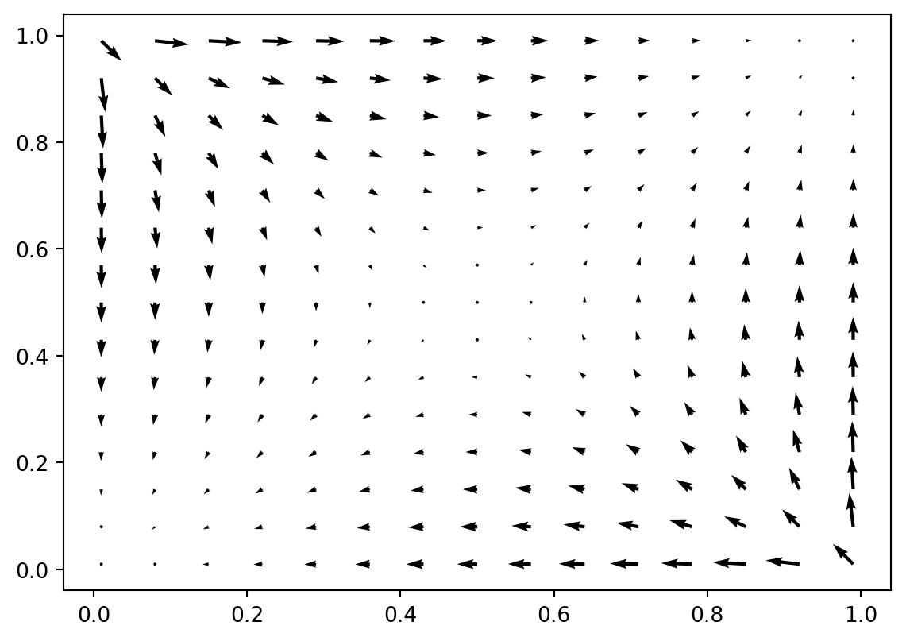
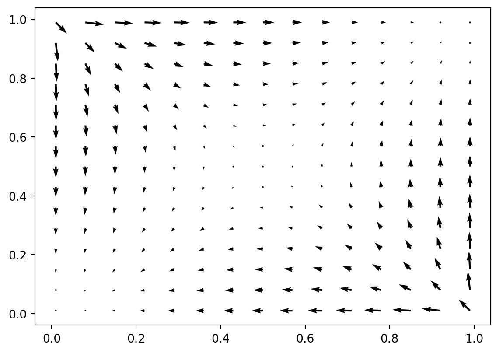
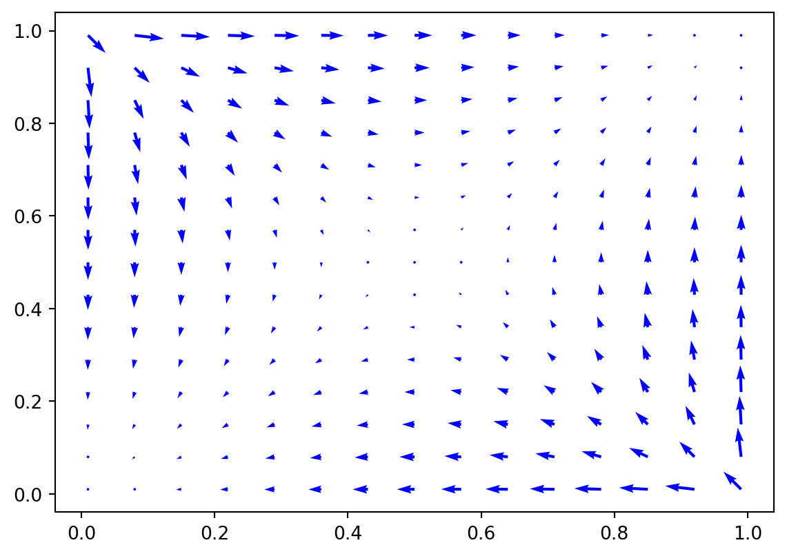
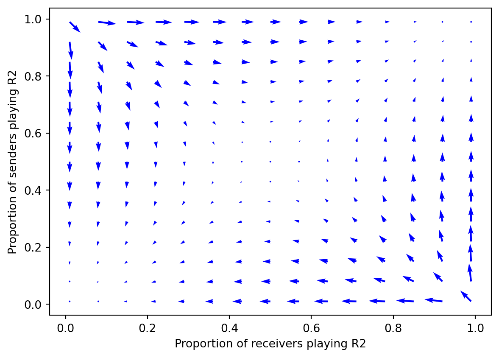
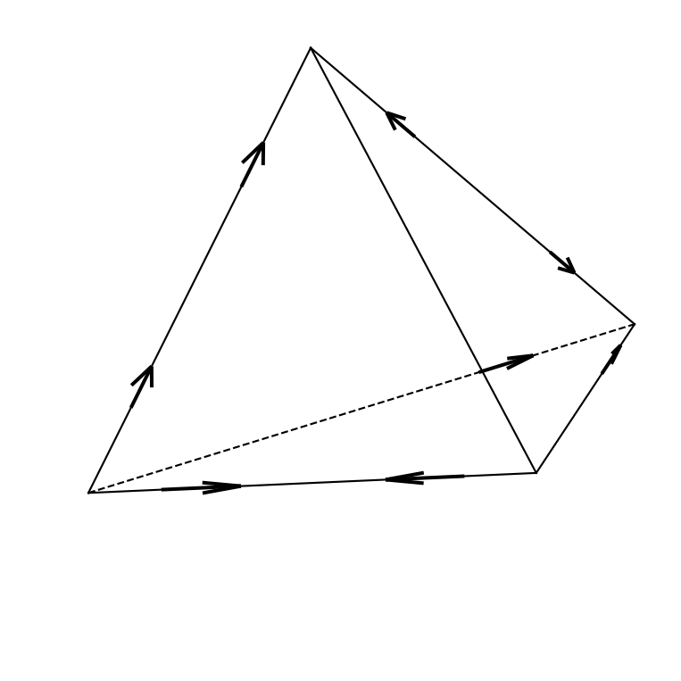
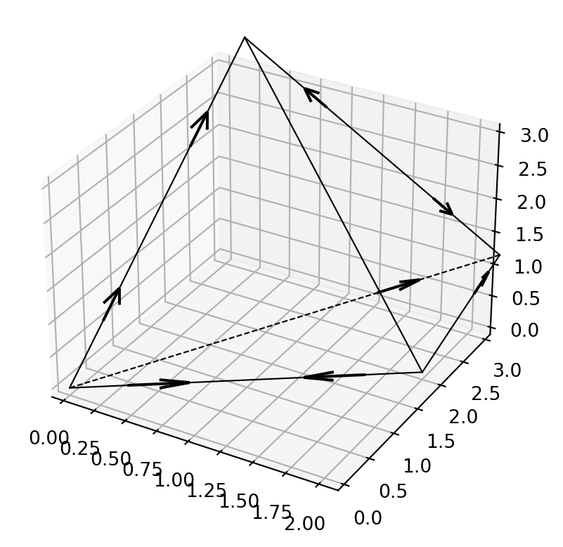
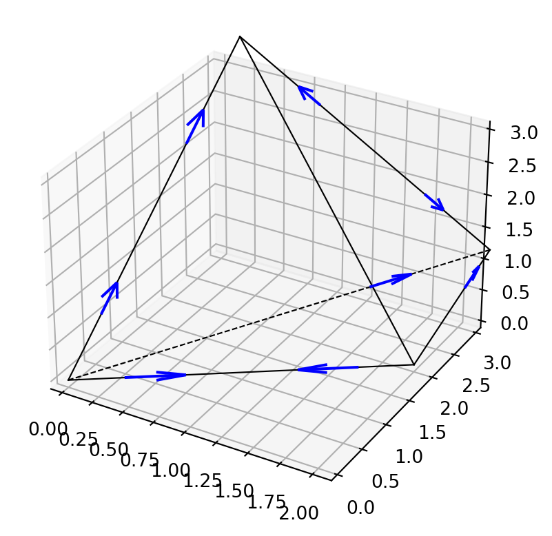
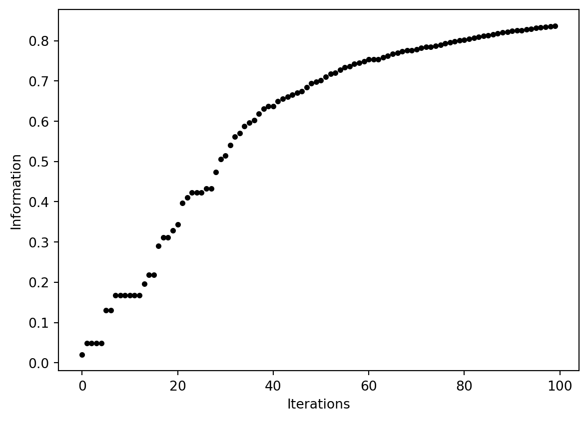
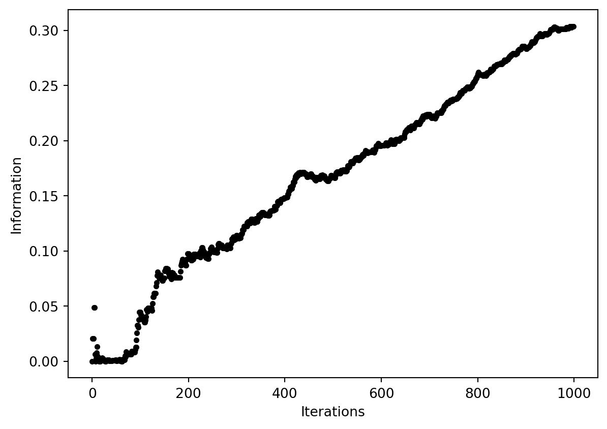
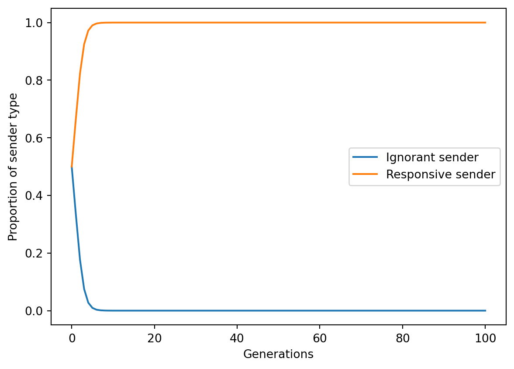

from evoke.examples.skyrms2010signals import *
fig1_1 = Skyrms2010_1_1()
Suppose you want to recreate Figure 1.1 from (Skyrms, 2010, p. 11). It’s as easy as importing the relevant class and creating an instance of it.
from evoke.examples.skyrms2010signals import *
fig1_1 = Skyrms2010_1_1()
Let’s say you don’t like the boring black arrows and want them to be blue instead. The figure you just created has various customisable options. Change the color attribute, and evoke will automatically rebuild the plot:
fig1_1.color = "blue"
Suppose you’re appalled at the lack of axis labels. You can add them like standard class attributes. The figure will again be instantly recreated.
fig1_1.show_immediately = False # Let's not create two new plots...
fig1_1.xlabel = "Proportion of receivers playing R2"
fig1_1.ylabel = "Proportion of senders playing R2"
fig1_1.show() #... let's just create one manually.
Here we suppressed the immediate output upon changing an attribute by first setting fig1_1.show_immediately = False. Without this, the code would have created two new figures, one after the setting of fig1_1.xlabel and one after fig1_1.ylabel.
Some figures look better without axes at all. Skyrms’ second figure is an example:
fig1_2 = Skyrms2010_1_2()
If you want to see the axes, just switch noaxis to False:
fig1_2.noaxis = False
I know what you’re thinking, and the answer is yes, you can make the arrows blue.
fig1_2.color = "blue"
One of the useful features of evoke is that it allows you to re-run existing figures with different data. In this way you can see how the results of a simulation would change if the parameters were tweaked.
Let’s take figure 3.3 of (Skyrms, 2010, p. 40) as an example. Once again we can create the basic figure just by creating an instance of the object.
fig3_3 = Skyrms2010_3_3()
(Figures like this rely on some randomisation, so the figure above might look a little different from how it does in the book.)
The basic figure shows what happens after 100 iterations. Let’s say we want to see what happens after 1000:
fig3_3 = Skyrms2010_3_3(iterations=1000)
Even if 100 iterations was not enough to generate appreciable information transmission between agents, 1000 iterations very likely will be.
You can use evoke to create your own signalling games and evolutionary simulations. Let’s create a very simple 3x3 signalling game with two players. We need four pieces of information to create the game:
state_chances: The number of states the sender can observe, and their probabilities. For this example there will be three equiprobable states.sender_payoff_matrix and receiver_payoff_matrix: Matrices defining the payoffs of sender and receiver. For this example they will be the same: when the state matches the act, both agents get a payoff of 1, otherwise they get a payoff of zero.messages: The number of messages available for the sender to send, which in this example is three.state_chances = np.array([1/3, 1/3, 1/3])
sender_payoff_matrix = np.eye(3)
receiver_payoff_matrix = np.eye(3)
messages = 3Let’s have a look at one of those payoff matrices:
sender_payoff_matrixarray([[1., 0., 0.],
[0., 1., 0.],
[0., 0., 1.]])The rows correspond to states and the columns to acts. So when the first act is performed in the first state, the agent gets a payoff of 1, and ditto for the second and third states and acts. Any other combination of state and act yields a payoff of zero.
Sender-receiver games are asymmetric, in that the sender and receiver have different roles. They also have a state that is determined by chance. We therefore need to import the Chance class from the asymmetric_games module.
from evoke.lib.asymmetric_games import ChanceWe can now create the game object, This is an instance of the Chance class, with the game parameters fed into it.
game = asy.Chance(
state_chances = state_chances,
sender_payoff_matrix = sender_payoff_matrix,
receiver_payoff_matrix = receiver_payoff_matrix,
messages = messages
)A game is a static object. It doesn’t do anything on its own. To make something happen, we need a set of strategies and a means by which those strategies evolve according to the payoffs they bring to the agents.
Fortunately, the game object already knows all the strategies that are in principle available to an agent:
sender_strategies = game.sender_pure_strats()
receiver_strategies = game.receiver_pure_strats()Let’s imagine that some senders always send the same signal no matter the state, while others choose a different signal for each state. These correspond to the first and sixth sender strategies (indexed by 0 and 5, because python indexing starts from 0):
sender_strategies[0]array([[1., 0., 0.],
[1., 0., 0.],
[1., 0., 0.]])sender_strategies[5]array([[1., 0., 0.],
[0., 1., 0.],
[0., 0., 1.]])So, we will construct a population with just these two strategies, along with the corresponding strategies for the receiver:
sender_strategies = np.array([sender_strategies[0],sender_strategies[5]])
receiver_strategies = np.array([receiver_strategies[0],receiver_strategies[5]])…and we can evolve a population playing some mixture of these strategies using an appropriate simulation object from the evolve module:
from evoke.lib.evolve import TwoPops # One population of senders, one population of receivers
# Create the simulation object
evo = TwoPops(game, sender_strategies, receiver_strategies)Let’s see what happens when we evolve these populations.
# Define equiprobable strategies
sender_strategy_vector = receiver_strategy_vector = np.array([1/2,1/2])
# Get a population vector in the format evo expects it
population_vector = np.concatenate((sender_strategy_vector, receiver_strategy_vector))
# For 100 iterations, get the new population vector
population_vectors_over_time = np.array([population_vector]) # this will store information about how the population changes
for _ in range(100):
# Get the population vector at the next step
population_vector = evo.discrete_replicator_delta_X(population_vector)
# Store the population vector
population_vectors_over_time = np.vstack((population_vectors_over_time,np.array([population_vector])))Now population_vectors_over_time is a big list of how many of each type of sender and receiver there was at each step of the simulation. Let’s plot the change in the two sender types:
from matplotlib import pyplot as plt
# Get the proportions of each sender type as it changes over time
sender_type_ignorant_time_series = population_vectors_over_time.T[0]
sender_type_responsive_time_series = population_vectors_over_time.T[1]
# Create the plot
plt.plot(range(len(population_vectors_over_time)),sender_type_ignorant_time_series,label="Ignorant sender")
plt.plot(range(len(population_vectors_over_time)),sender_type_responsive_time_series,label="Responsive sender")
# Add a legend
plt.legend()
# Add axis labels
plt.xlabel("Generations")
plt.ylabel("Proportion of sender type")
# Show the plot
plt.show()
The ignorant sender very quickly drops to zero, while the responsive sender very quickly dominates.